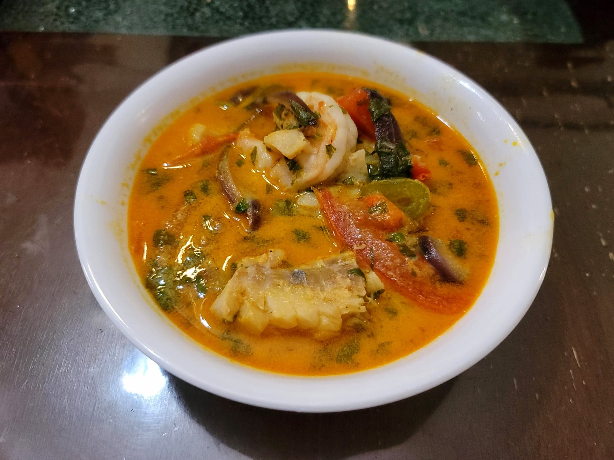

Moqueca

Ingredients:
- 2 lb Cod, or any other firm white fish, cut into large chunks
- 1 lb Shrimp, peeled and deveined
- Salt, to taste
- Black pepper, to taste
- 2 Limes juiced
- 2 tbsp Red palm oil
- 4 cloves Garlic, minced
- 1 Red jalapeño or Fresno, thinly sliced, OR 1/8 tsp Red chili flakes
- 2 large Tomatoes, cut into thin wedges
- 1 Red bell pepper, sliced
- 1 Green bell pepper, sliced
- 1 large Red onion, sliced
- 1 bunch Cilantro, chopped
- Salt, to taste
- Black pepper, to taste
- 3-4 tbsp Olive oil
- 1 Fish bouillon or Shrimp bouillon, crumbled
- 1 14 oz can Coconut milk
- 2 tbsp Red palm oil, or to taste
Instructions:
- Season and fish and shrimp with salt and pepper to taste. Then toss together with the lime juice. Let rest in the fridge until ready.
- Heat the oil in a large pot over medium heat. Then add in the garlic and jalapeño and sauté for about 1 minute or until fragrant. Then layer into the pot the 1/2 of the tomatoes, 1/2 of the bell pepper, 1/2 of the onion, 1/2 of the fish and shrimp, and 1/3 of the cilantro. Then season with salt, pepper, and 1/2 of the olive oil. Then repeat the layering again and seasoning again, reserving the last 1/3 cilantro for garnish.
- Top with the bouillon, coconut milk, and palm oil. Bring to a boil and then reduce to low heat. Cover and let cook for about 15 minutes. Do not overcook as to prevent the fish from becoming too tender and falling apart in the stew. Then remove from the heat. Taste and add seasoning as needed. Then stir in the rest of the cilantro. Serve hot over rice.